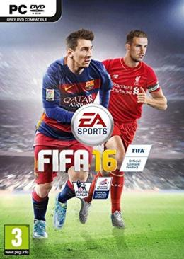

المتجر الشامل للالعاب
Supermarket Simulator
حكاية اللعبة
لعبة محاكي ادارة السوبر ماركت
Ghost of Tsushima DIRECTOR'S CUT
حكاية اللعبة
تدور احداث اللعبة في عهد الساموراي القديم وتحديدا أثناء مجابهة الغزو المغولي الذي وَقع عام 1274 في جزيرة تدعى تسوشيما.
BioShock Infinite The Complete Edition
حكاية اللعبة
لعبة ال fps "منظور الشخص الاول" BioShock Infinite هي الاصدار الثالث في سلسلة بايوشوك في 1912، يؤخذ بوكر دويت من قبل التوأم لوتيس "Lutece" إلى منارة جزيرة قبالة ساحل ولاية ماين; هيكل المنارة يضم صاروخ ينقل فيه بوكر إلى كولومبيا، في مهمة
FIFA 16
حكاية اللعبة
لعبة محاكاة كرة القدم فيفا 2016

Watch Dogs
حكاية اللعبة
لعبة الاكشن و المغامرة وعالم مفتوح من تطوير استيديو يوبي سوفت تدور قصة اللعبة حول جماعة من المخترقين (الهاكرز) تدعى DedSec يواجهون سوء استغلال التكنولوجيا ويسعون إلى إظهار ضعف النظام ، سيتعين على اللاعبين مواجهة فساد عسكري في أثناء مقاتلة دولة تتجسس باستمرار على سكانها. الهدف هو التغلب على القمع بأي طريقة وثمن عبر تشكيل فريق ذي مهارات مختلفة.